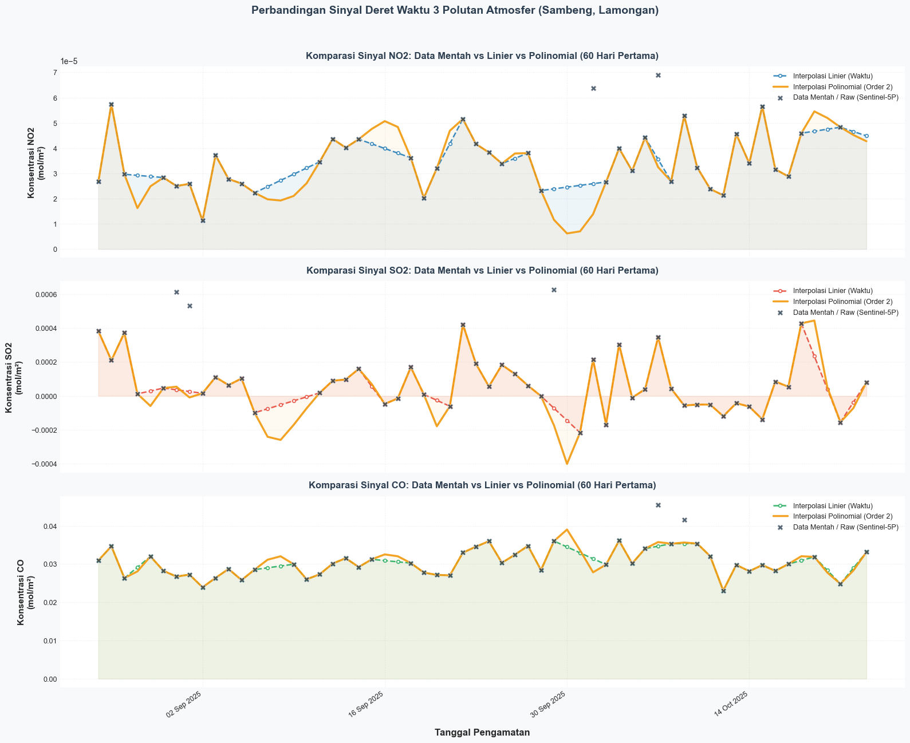

Catatan Materi: Pra-Pemrosesan Deret Waktu 3 Polutan (NO2, SO2, CO), Komparasi 2 Metode Interpolasi (Linier vs Polinomial), dan Ekstraksi 204 Fitur TSFEL#
Nama Mahasiswa : Dedy Nurohim
NIM : 240411100115
Program Studi : Teknik Informatika
Mata Kuliah : Proyek Sains Data
Alur Lengkap Pembelajaran Terpadu (Step-by-Step Workflow)#
Langkah 1 — Konsolidasi Fitur Pra-Ekstraksi (3 File TSFEL):
Menyatukan 3 berkas CSV fitur TSFEL (CO_sambeng_TSFEL.csv,NO2_Sambeng_TSFEL.csv,SO2_sambeng_TSFEL.csv) langsung tanpa kolomdatemenjadigabungan_3_polutan_Sambeng_TSFEL.csv(tepat 204 fitur).Langkah 2 — Pemuatan & Seleksi 3 Polutan Deret Waktu Mentah:
Mengambil data deret waktu untuk 3 polutan sasaran (NO2,SO2,CO) beserta kolomdate, menyimpannya sebagai satu berkas data mentah gabungan 3 polutan (KualitasUdaraSambeng.csv), serta memeriksa missing values awal.Langkah 3 — Penanganan Outlier dan Missing Value:
Mengidentifikasi missing values awal serta mendeteksi pencilan menggunakan metode Rentang Interkuartil (Interquartile Range / IQR) pada 3 polutan, lalu menyatukannya menjadiNaNterpadu.Langkah 4 — Interpolasi Linier Regresi / Waktu (Menghasilkan File CSV Gabungan Linier):
Melakukan imputasi deret waktu menggunakan interpolasi linier berbasis waktu (method='time') dan menyimpan hasilnya ke 1 berkas CSV 3 polutan bersih:Sambeng_3Polutan_LinearClean.csv.Langkah 5 — Interpolasi Polinomial Order 2 (Menghasilkan File CSV Gabungan Polinomial):
Melakukan imputasi deret waktu menggunakan interpolasi kurva polinomial kuadratik (method='polynomial', order=2) dan menyimpan hasilnya ke 1 berkas CSV 3 polutan bersih:Sambeng_3Polutan_PolynomialClean.csv.Langkah 6 — Komparasi Visual & Tabel Statistik Sinyal (Matplotlib):
Membandingkan kurva deret waktu (subplot 3 polutan) serta tabel statistik deskriptif antara sinyal hasil interpolasi linier dan polinomial.Langkah 7 — Ekstraksi 204 Fitur TSFEL Linier Regresi (KODE DARI PENGGUNA):
Mengekstrak 68 fitur TSFEL per polutan membaca hanya dari berkas gabungan 3 polutan linier (Sambeng_3Polutan_LinearClean.csv) \(\rightarrow\) menghasilkanAll-Pollutants-Sambeng-Linear-TSFEL.csv(1 baris \(\times\) 204 kolom fitur).Langkah 8 — Ekstraksi 204 Fitur TSFEL Polinomial:
Mengekstrak 68 fitur TSFEL per polutan membaca hanya dari berkas gabungan 3 polutan polinomial (Sambeng_3Polutan_PolynomialClean.csv) \(\rightarrow\) menghasilkanAll-Pollutants-Sambeng-Polynomial-TSFEL.csv(1 baris \(\times\) 204 kolom fitur).Langkah 9 — Evaluasi Komparasi Fitur Kunci 204 Kolom:
Membandingkan nilai numerik fitur representatif antara hasil Linier Regresi dan Polinomial.Langkah 10 — Kesimpulan Akhir Materi.
Langkah 1: Menyatukan 3 File CSV Fitur (CO, NO2, SO2) Sambeng Menjadi Satu File CSV Fitur#
Memuat 3 berkas CSV fitur TSFEL individual yang sudah ada (CO_sambeng_TSFEL.csv, NO2_Sambeng_TSFEL.csv, dan SO2_sambeng_TSFEL.csv), memberikan prefix nama polutan (CO_, NO2_, SO2_), menyatukannya secara horizontal (column-wise), dan mengekspor hasilnya langsung tanpa kolom date ke dalam satu berkas: gabungan_3_polutan_Sambeng_TSFEL.csv (1 baris \(\times\) 204 kolom fitur).
import pandas as pd
import numpy as np
# 1. Muat 3 file CSV fitur TSFEL individual yang sudah ada
df_co_fitur = pd.read_csv('CO_sambeng_TSFEL.csv').add_prefix('CO_')
df_no2_fitur = pd.read_csv('NO2_Sambeng_TSFEL.csv').add_prefix('NO2_')
df_so2_fitur = pd.read_csv('SO2_sambeng_TSFEL.csv').add_prefix('SO2_')
# 2. Gabungkan secara horizontal menjadi satu baris fitur lengkap (204 kolom)
df_gabungan_204 = pd.concat([df_co_fitur, df_no2_fitur, df_so2_fitur], axis=1)
# 3. Simpan ke file CSV utama
output_fitur_gabungan = 'gabungan_3_polutan_Sambeng_TSFEL.csv'
df_gabungan_204.to_csv(output_fitur_gabungan, index=False)
print(f"File fitur gabungan berhasil disimpan: '{output_fitur_gabungan}'")
print(f"Dimensi dataset: {df_gabungan_204.shape[0]} baris x {df_gabungan_204.shape[1]} kolom (204 fitur polutan)")
df_gabungan_204.iloc[:, :8]
File fitur gabungan berhasil disimpan: 'gabungan_3_polutan_Sambeng_TSFEL.csv'
Dimensi dataset: 1 baris x 204 kolom (204 fitur polutan)
| CO_abs_energy | CO_auc | CO_autocorr | CO_average_power | CO_calc_centroid | CO_calc_max | CO_calc_mean | CO_calc_median | |
|---|---|---|---|---|---|---|---|---|
| 0 | 0.312575 | 10.609935 | 2.0 | 0.000856 | 185.409232 | 0.037082 | 0.029078 | 0.028811 |
Langkah 2: Pemuatan & Seleksi 3 Polutan Deret Waktu Sambeng#
Memuat data deret waktu wilayah Sambeng (all_polutan_Sambeng_timeseries.csv), lalu memfilter hanya 3 polutan sasaran (NO2, SO2, CO) bersama kolom date. Hasil seleksi 3 polutan ini disimpan ke 1 berkas data mentah KualitasUdaraSambeng.csv serta memeriksa missing values awal.
# Memuat dataset deret waktu Sambeng
df_raw_all = pd.read_csv('all_polutan_Sambeng_timeseries.csv')
df_raw_all['date'] = pd.to_datetime(df_raw_all['date'])
df_raw_all = df_raw_all.sort_values('date').reset_index(drop=True)
# Seleksi hanya 3 polutan yang menjadi fokus kajian
pollutants = ['NO2', 'SO2', 'CO']
df_3polutan_raw = df_raw_all[['date'] + pollutants].copy()
# Simpan dataset mentah gabungan 3 polutan (tepat 1 file CSV)
output_csv_mentah = 'KualitasUdaraSambeng.csv'
df_3polutan_raw.to_csv(output_csv_mentah, index=False)
print(f"Dataset mentah 3 polutan berhasil disimpan ke: '{output_csv_mentah}'")
print(f"Rentang Pengamatan: {df_3polutan_raw['date'].min().strftime('%Y-%m-%d')} s.d. {df_3polutan_raw['date'].max().strftime('%Y-%m-%d')} ({len(df_3polutan_raw)} hari)")
# Pemeriksaan missing values awal
laporan_missing = []
for p in pollutants:
df_3polutan_raw[p] = pd.to_numeric(df_3polutan_raw[p], errors='coerce')
n_null = df_3polutan_raw[p].isna().sum()
laporan_missing.append({
'Polutan': p,
'Total Observasi': len(df_3polutan_raw),
'Data Hilang (NaN)': n_null,
'Data Valid': len(df_3polutan_raw) - n_null,
'Persentase Missing': f"{(n_null / len(df_3polutan_raw)) * 100:.2f}%"
})
print("\nTabel Kondisi Awal Missing Values 3 Polutan:")
print(pd.DataFrame(laporan_missing).to_string(index=False))
Dataset mentah 3 polutan berhasil disimpan ke: 'KualitasUdaraSambeng.csv'
Rentang Pengamatan: 2025-08-25 s.d. 2026-08-25 (366 hari)
Tabel Kondisi Awal Missing Values 3 Polutan:
Polutan Total Observasi Data Hilang (NaN) Data Valid Persentase Missing
NO2 366 142 224 38.80%
SO2 366 89 277 24.32%
CO 366 97 269 26.50%
Langkah 3: Penanganan Outlier dan Missing Value#
Pada tahap ini, kita melakukan penanganan terpadu terhadap dua permasalahan utama kualitas data:
Identifikasi Missing Values Awal: Titik data yang hilang akibat tutupan awan (cloud masking) pada citra satelit Sentinel-5P.
Deteksi Pencilan (Outlier) dengan Metode IQR: Nilai-nilai ekstrem yang tidak wajar akibat gangguan sensor diidentifikasi menggunakan rumus Rentang Interkuartil (Interquartile Range / IQR): $\(\text{Batas Bawah} = Q_1 - 1.5 \times \text{IQR}, \quad \text{Batas Atas} = Q_3 + 1.5 \times \text{IQR}\)$
Standarisasi Menjadi
NaN: Seluruh nilai pencilan (outliers) diubah menjadiNaN(bukan menghapus baris tanggal). Dengan cara ini, kontinuitas grid waktu kalender tetap utuh dan penanganan pencilan disatukan dengan missing values untuk kemudian diimputasi secara optimal pada Langkah 4 (Linier) dan Langkah 5 (Polinomial).
df_nan = df_3polutan_raw.copy()
laporan_penanganan = []
for p in pollutants:
# 1. Hitung missing values awal
n_missing_awal = df_nan[p].isna().sum()
# 2. Hitung statistik kuartil dan ambang batas IQR
q1 = df_nan[p].quantile(0.25)
q3 = df_nan[p].quantile(0.75)
iqr = q3 - q1
lower_bound = q1 - 1.5 * iqr
upper_bound = q3 + 1.5 * iqr
# 3. Deteksi outlier dan ubah menjadi NaN
mask_outlier = (df_nan[p] < lower_bound) | (df_nan[p] > upper_bound)
n_outlier = mask_outlier.sum()
df_nan.loc[mask_outlier, p] = np.nan
# 4. Total NaN gabungan yang siap diinterpolasi
n_total_nan = df_nan[p].isna().sum()
laporan_penanganan.append({
'Polutan': p,
'Missing Awal': n_missing_awal,
'Outlier (IQR)': n_outlier,
'Batas Bawah': f"{lower_bound:.2e}",
'Batas Atas': f"{upper_bound:.2e}",
'Total NaN Siap Interpolasi': n_total_nan,
'Persentase NaN': f"{(n_total_nan / len(df_nan)) * 100:.2f}%"
})
print("Tabel Laporan Penanganan Outlier dan Missing Value (3 Polutan):")
print(pd.DataFrame(laporan_penanganan).to_string(index=False))
Tabel Laporan Penanganan Outlier dan Missing Value (3 Polutan):
Polutan Missing Awal Outlier (IQR) Batas Bawah Batas Atas Total NaN Siap Interpolasi Persentase NaN
NO2 142 4 2.60e-06 6.35e-05 146 39.89%
SO2 89 23 -2.68e-04 4.47e-04 112 30.60%
CO 97 3 2.03e-02 3.83e-02 100 27.32%
Langkah 4: Interpolasi Linier Regresi / Waktu \(\rightarrow\) Menghasilkan File CSV Gabungan 3 Polutan Linier#
Interpolasi linier berbasis waktu (method='time') menghubungkan titik data valid secara proporsional terhadap selisih hari kalender. Kekosongan pada batas awal/akhir ditangani dengan .ffill().bfill().
Hasil penggabungan 3 polutan bersih ini disimpan ke dalam 1 berkas CSV:
Sambeng_3Polutan_LinearClean.csv
# Melakukan interpolasi linier waktu pada 3 polutan
df_linear_clean = df_nan.copy().set_index('date')
for p in pollutants:
df_linear_clean[p] = df_linear_clean[p].interpolate(method='time').ffill().bfill()
df_linear_clean = df_linear_clean.reset_index()
# Simpan hasil interpolasi linier gabungan 3 polutan ke 1 file CSV
csv_linear = 'Sambeng_3Polutan_LinearClean.csv'
df_linear_clean.to_csv(csv_linear, index=False)
print(f"File CSV gabungan 3 polutan (Interpolasi Linier) berhasil disimpan ke: '{csv_linear}'")
print(f"Dimensi data: {df_linear_clean.shape[0]} baris x {df_linear_clean.shape[1]} kolom")
print(f"Sisa NaN setelah imputasi:")
for p in pollutants:
print(f"- {p:4s}: {df_linear_clean[p].isna().sum()} NaN (100% Bebas Missing Value)")
df_linear_clean.head()
File CSV gabungan 3 polutan (Interpolasi Linier) berhasil disimpan ke: 'Sambeng_3Polutan_LinearClean.csv'
Dimensi data: 366 baris x 4 kolom
Sisa NaN setelah imputasi:
- NO2 : 0 NaN (100% Bebas Missing Value)
- SO2 : 0 NaN (100% Bebas Missing Value)
- CO : 0 NaN (100% Bebas Missing Value)
| date | NO2 | SO2 | CO | |
|---|---|---|---|---|
| 0 | 2025-08-25 | 0.000027 | 0.000382 | 0.030949 |
| 1 | 2025-08-26 | 0.000057 | 0.000209 | 0.034668 |
| 2 | 2025-08-27 | 0.000030 | 0.000372 | 0.026340 |
| 3 | 2025-08-28 | 0.000029 | 0.000012 | 0.029177 |
| 4 | 2025-08-29 | 0.000029 | 0.000029 | 0.032015 |
Langkah 5: Interpolasi Polinomial (Order 2) \(\rightarrow\) Menghasilkan File CSV Gabungan 3 Polutan Polinomial#
Interpolasi polinomial kuadratik (\(k=2\)) menyesuaikan kurva lengkung non-linier \(P(t) = a_0 + a_1 t + a_2 t^2\) untuk memodelkan dinamika musiman polutan secara mulus. Kekosongan pada batas awal/akhir ditangani dengan .ffill().bfill().
Hasil penggabungan 3 polutan bersih ini disimpan ke dalam 1 berkas CSV:
Sambeng_3Polutan_PolynomialClean.csv
# Melakukan interpolasi polinomial (order=2) pada 3 polutan
df_poly_clean = df_nan.copy().set_index('date')
for p in pollutants:
df_poly_clean[p] = df_poly_clean[p].interpolate(method='polynomial', order=2).ffill().bfill()
df_poly_clean = df_poly_clean.reset_index()
# Simpan hasil interpolasi polinomial gabungan 3 polutan ke 1 file CSV
csv_poly = 'Sambeng_3Polutan_PolynomialClean.csv'
df_poly_clean.to_csv(csv_poly, index=False)
print(f"File CSV gabungan 3 polutan (Interpolasi Polinomial) berhasil disimpan ke: '{csv_poly}'")
print(f"Dimensi data: {df_poly_clean.shape[0]} baris x {df_poly_clean.shape[1]} kolom")
print(f"Sisa NaN setelah imputasi:")
for p in pollutants:
print(f"- {p:4s}: {df_poly_clean[p].isna().sum()} NaN (100% Bebas Missing Value)")
df_poly_clean.head()
File CSV gabungan 3 polutan (Interpolasi Polinomial) berhasil disimpan ke: 'Sambeng_3Polutan_PolynomialClean.csv'
Dimensi data: 366 baris x 4 kolom
Sisa NaN setelah imputasi:
- NO2 : 0 NaN (100% Bebas Missing Value)
- SO2 : 0 NaN (100% Bebas Missing Value)
- CO : 0 NaN (100% Bebas Missing Value)
| date | NO2 | SO2 | CO | |
|---|---|---|---|---|
| 0 | 2025-08-25 | 0.000027 | 0.000382 | 0.030949 |
| 1 | 2025-08-26 | 0.000057 | 0.000209 | 0.034668 |
| 2 | 2025-08-27 | 0.000030 | 0.000372 | 0.026340 |
| 3 | 2025-08-28 | 0.000016 | 0.000012 | 0.028087 |
| 4 | 2025-08-29 | 0.000025 | -0.000059 | 0.032015 |
Langkah 6: Komparasi Visual & Tabel Statistik Sinyal (Data Mentah vs Linier vs Polinomial)#
Membandingkan secara komprehensif sinyal deret waktu antara:
Data Mentah / Raw (Sebelum Interpolasi): Data asli pengamatan satelit Sentinel-5P yang masih memiliki missing values (kekosongan) dan titik pencilan.
Hasil Interpolasi Linier Regresi / Waktu: Kurva imputasi garis lurus proporsional terhadap rentang hari kalender (
Sambeng_3Polutan_LinearClean.csv).Hasil Interpolasi Polinomial (Order 2): Kurva imputasi lengkung kuadratik non-linier (
Sambeng_3Polutan_PolynomialClean.csv).
Evaluasi dilakukan melalui tabel statistik deskriptif dan visualisasi grafik 3 subplot (sampel 60 hari pertama).
import matplotlib.pyplot as plt
import matplotlib.dates as mdates
# 1. Tabel Komparasi Statistik Sinyal (Data Mentah vs Linier vs Polinomial)
komparasi_sinyal = []
for p in pollutants:
s_raw = df_3polutan_raw[p]
s_lin = df_linear_clean[p]
s_poly = df_poly_clean[p]
komparasi_sinyal.append({
'Polutan': p,
'Mean Raw': f"{s_raw.mean():.4e}",
'Mean Linier': f"{s_lin.mean():.4e}",
'Mean Polinomial': f"{s_poly.mean():.4e}",
'Std Raw': f"{s_raw.std():.4e}",
'Std Linier': f"{s_lin.std():.4e}",
'Std Polinomial': f"{s_poly.std():.4e}",
'Min Raw': f"{s_raw.min():.4e}",
'Min Linier': f"{s_lin.min():.4e}",
'Min Polinomial': f"{s_poly.min():.4e}",
'Max Raw': f"{s_raw.max():.4e}",
'Max Linier': f"{s_lin.max():.4e}",
'Max Polinomial': f"{s_poly.max():.4e}"
})
print("Tabel Komparasi Statistik Sinyal (Data Mentah / Raw vs Linier vs Polinomial):")
print(pd.DataFrame(komparasi_sinyal).to_string(index=False))
# 2. Visualisasi Kurva Deret Waktu - Styling Profesional
plt.style.use('seaborn-v0_8-darkgrid')
fig, axes = plt.subplots(3, 1, figsize=(16, 13), sharex=True)
fig.patch.set_facecolor('#f8f9fa')
color_raw = '#2c3e50'
color_lin = {'NO2': '#2980b9', 'SO2': '#e74c3c', 'CO': '#27ae60'}
color_poly = '#f39c12'
sample_days = 60
for i, p in enumerate(pollutants):
ax = axes[i]
ax.set_facecolor('#ffffff')
dates = pd.to_datetime(df_linear_clean['date'].iloc[:sample_days])
y_raw = df_3polutan_raw[p].iloc[:sample_days]
y_lin = df_linear_clean[p].iloc[:sample_days]
y_poly = df_poly_clean[p].iloc[:sample_days]
# Area fill transparan di bawah kurva interpolasi
ax.fill_between(dates, y_lin, alpha=0.08, color=color_lin[p], zorder=1)
ax.fill_between(dates, y_poly, alpha=0.06, color=color_poly, zorder=1)
# Plot hasil interpolasi linier (garis putus-putus)
ax.plot(dates, y_lin, label='Interpolasi Linier (Waktu)',
color=color_lin[p], linestyle='--', linewidth=1.8,
marker='o', markersize=4, markerfacecolor='white',
markeredgecolor=color_lin[p], markeredgewidth=1.2,
alpha=0.9, zorder=2)
# Plot hasil interpolasi polinomial (garis tebal solid)
ax.plot(dates, y_poly, label='Interpolasi Polinomial (Order 2)',
color=color_poly, linewidth=2.5, alpha=0.92, zorder=3)
# Plot data mentah asli satelit (titik observasi sebelum interpolasi)
ax.scatter(dates, y_raw, label='Data Mentah / Raw (Sentinel-5P)',
color=color_raw, marker='X', s=50, zorder=4, alpha=0.8,
edgecolors='white', linewidths=0.5)
ax.set_ylabel(f"Konsentrasi {p}\n(mol/m²)", fontsize=11, fontweight='bold', labelpad=10)
ax.set_title(f"Komparasi Sinyal {p}: Data Mentah vs Linier vs Polinomial ({sample_days} Hari Pertama)",
fontsize=12, fontweight='bold', pad=10, color='#2c3e50')
ax.legend(loc='upper right', fontsize=9, framealpha=0.95, edgecolor='#cccccc',
fancybox=True, shadow=True)
ax.grid(True, linestyle=':', alpha=0.4, color='#cccccc')
ax.tick_params(axis='both', labelsize=9)
# Format sumbu x agar tanggal tidak tumpang tindih
ax.xaxis.set_major_locator(mdates.WeekdayLocator(interval=2))
ax.xaxis.set_major_formatter(mdates.DateFormatter('%d %b %Y'))
plt.xlabel("Tanggal Pengamatan", fontsize=12, fontweight='bold', labelpad=12)
fig.suptitle("Perbandingan Sinyal Deret Waktu 3 Polutan Atmosfer (Sambeng, Lamongan)",
fontsize=14, fontweight='bold', color='#2c3e50', y=0.995)
plt.xticks(rotation=35, ha='right')
plt.tight_layout(rect=[0, 0, 1, 0.97])
plt.show()
Tabel Komparasi Statistik Sinyal (Data Mentah / Raw vs Linier vs Polinomial):
Polutan Mean Raw Mean Linier Mean Polinomial Std Raw Std Linier Std Polinomial Min Raw Min Linier Min Polinomial Max Raw Max Linier Max Polinomial
NO2 3.3062e-05 3.0763e-05 3.0347e-05 1.1793e-05 1.0341e-05 1.1924e-05 -1.4135e-06 6.8182e-06 4.6603e-06 6.8933e-05 6.2338e-05 6.3694e-05
SO2 1.1130e-04 6.5988e-05 6.1722e-05 1.9484e-04 1.3380e-04 1.5896e-04 -4.4001e-04 -2.3441e-04 -4.0043e-04 9.4070e-04 4.2798e-04 4.8823e-04
CO 2.9499e-02 2.9078e-02 2.9022e-02 3.3486e-03 2.9203e-03 3.2560e-03 2.2048e-02 2.2048e-02 1.9827e-02 4.5529e-02 3.7082e-02 3.9046e-02

Langkah 7: Ekstraksi Fitur TSFEL dari Data Gabungan 3 Polutan Linier (204 Kolom)#
Berikut adalah kode ekstraksi fitur yang diberikan pengguna yang membaca langsung dari berkas CSV gabungan 3 polutan hasil interpolasi linier (Sambeng_3Polutan_LinearClean.csv), mengekstrak 68 fitur TSFEL per polutan, dan menyimpan hasilnya ke All-Pollutants-Sambeng-Linear-TSFEL.csv (1 baris \(\times\) 204 kolom fitur).
import pandas as pd
import numpy as np
import inspect
import tsfel.feature_extraction.features as tsfel_features
# ---------- 1. Muat 1 file CSV utama yang berisi data gabungan 3 polutan linier ----------
# Membaca berkas hasil interpolasi linier gabungan 3 polutan
df = pd.read_csv('Sambeng_3Polutan_LinearClean.csv')
df['date'] = pd.to_datetime(df['date'])
df = df.sort_values('date').reset_index(drop=True)
pollutants = ['NO2', 'SO2', 'CO']
fs = 1
# ---------- 2. Daftar PERSIS 68 fitur yang diminta ----------
FEATURE_LIST = """abs_energy auc autocorr average_power calc_centroid calc_max calc_mean
calc_median calc_min calc_std calc_var dfa distance ecdf ecdf_percentile ecdf_percentile_count
ecdf_slope entropy fundamental_frequency higuchi_fractal_dimension hist_mode human_range_energy
hurst_exponent interq_range kurtosis lempel_ziv lpcc max_frequency max_power_spectrum
maximum_fractal_length mean_abs_deviation mean_abs_diff mean_diff median_abs_deviation
median_abs_diff median_diff median_frequency mfcc mse negative_turning neighbourhood_peaks
petrosian_fractal_dimension pk_pk_distance positive_turning power_bandwidth rms skewness slope
spectral_centroid spectral_decrease spectral_distance spectral_entropy spectral_kurtosis
spectral_positive_turning spectral_roll_off spectral_roll_on spectral_skewness spectral_slope
spectral_spread spectral_variation spectrogram_mean_coeff sum_abs_diff wavelet_abs_mean
wavelet_energy wavelet_entropy wavelet_std wavelet_var zero_cross""".split()
print(f"Jumlah fitur per polutan: {len(FEATURE_LIST)}")
print(f"Total target fitur keseluruhan: {len(FEATURE_LIST) * len(pollutants)}")
def to_scalar(result):
if isinstance(result, dict) and "values" in result:
result = result["values"]
if isinstance(result, (list, tuple, np.ndarray)):
arr = np.asarray(result, dtype=float)
return float(np.nanmean(arr))
return float(result)
def extract_one(fn_name, signal, fs):
fn = getattr(tsfel_features, fn_name)
params = inspect.signature(fn).parameters
if "fs" in params:
result = fn(signal, fs)
else:
result = fn(signal)
return to_scalar(result)
# Dictionary untuk menampung seluruh hasil ekstraksi dari semua polutan
combined_row = {}
# ---------- 3. Looping untuk membersihkan dan mengekstraksi tiap polutan ----------
for pollutant in pollutants:
print(f"\n--- Memproses polutan: {pollutant} ---")
# Buat copy dataframe agar tidak saling menimpa
df_poly = df[['date', pollutant]].copy()
# Paksa kolom target jadi numerik
df_poly[pollutant] = pd.to_numeric(df_poly[pollutant], errors='coerce')
n_missing_before = df_poly[pollutant].isna().sum()
print(f"Jumlah NaN/non-numerik pada {pollutant}: {n_missing_before}")
# Handling outlier dengan IQR
Q1 = df_poly[pollutant].quantile(0.25)
Q3 = df_poly[pollutant].quantile(0.75)
IQR = Q3 - Q1
lower_bound = Q1 - 1.5 * IQR
upper_bound = Q3 + 1.5 * IQR
df_poly.loc[(df_poly[pollutant] < lower_bound) | (df_poly[pollutant] > upper_bound), pollutant] = np.nan
# Interpolasi waktu dan cleaning
df_clean = df_poly.set_index('date').interpolate(method='time').ffill().bfill()
signal_1d = df_clean[pollutant].astype(float).values
# Ekstraksi fitur dan beri prefix nama polutan (misal: NO2_abs_energy)
for fn_name in FEATURE_LIST:
feature_key = f"{pollutant}_{fn_name}"
combined_row[feature_key] = extract_one(fn_name, signal_1d, fs)
# ---------- 4. Simpan ke DataFrame final (1 baris, 204 kolom) ----------
extracted_features_linear = pd.DataFrame([combined_row])
print(f"\nBerhasil! Total kolom akhir yang dihasilkan: {extracted_features_linear.shape[1]}")
output_filename = 'All-Pollutants-Sambeng-Linear-TSFEL.csv'
extracted_features_linear.to_csv(output_filename, index=False)
print(f"File berhasil disimpan sebagai: {output_filename}")
Jumlah fitur per polutan: 68
Total target fitur keseluruhan: 204
--- Memproses polutan: NO2 ---
Jumlah NaN/non-numerik pada NO2: 0
--- Memproses polutan: SO2 ---
Jumlah NaN/non-numerik pada SO2: 0
--- Memproses polutan: CO ---
Jumlah NaN/non-numerik pada CO: 0
Berhasil! Total kolom akhir yang dihasilkan: 204
File berhasil disimpan sebagai: All-Pollutants-Sambeng-Linear-TSFEL.csv
Langkah 8: Ekstraksi Fitur TSFEL dari Data Gabungan 3 Polutan Polinomial (204 Kolom)#
Mengekstrak 68 fitur TSFEL per polutan membaca langsung dari berkas CSV gabungan 3 polutan hasil interpolasi polinomial (Sambeng_3Polutan_PolynomialClean.csv), menggunakan interpolasi polinomial kuadratik (method='polynomial', order=2), dan menyimpannya ke All-Pollutants-Sambeng-Polynomial-TSFEL.csv (1 baris \(\times\) 204 kolom fitur).
# ---------- 1. Muat file CSV gabungan 3 polutan polinomial ----------
df_poly_source = pd.read_csv('Sambeng_3Polutan_PolynomialClean.csv')
df_poly_source['date'] = pd.to_datetime(df_poly_source['date'])
df_poly_source = df_poly_source.sort_values('date').reset_index(drop=True)
combined_row_poly = {}
# ---------- 2. Looping ekstraksi tiap polutan dengan interpolasi polinomial ----------
for pollutant in pollutants:
print(f"\n--- Memproses polutan: {pollutant} (Polinomial) ---")
df_p = df_poly_source[['date', pollutant]].copy()
df_p[pollutant] = pd.to_numeric(df_p[pollutant], errors='coerce')
n_missing_before = df_p[pollutant].isna().sum()
print(f"Jumlah NaN/non-numerik pada {pollutant}: {n_missing_before}")
# Handling outlier dengan IQR
Q1 = df_p[pollutant].quantile(0.25)
Q3 = df_p[pollutant].quantile(0.75)
IQR = Q3 - Q1
lower_bound = Q1 - 1.5 * IQR
upper_bound = Q3 + 1.5 * IQR
df_p.loc[(df_p[pollutant] < lower_bound) | (df_p[pollutant] > upper_bound), pollutant] = np.nan
# Interpolasi polinomial (order 2) dan penambalan ujung sinyal
df_clean_poly = df_p.set_index('date').interpolate(method='polynomial', order=2).ffill().bfill()
signal_1d = df_clean_poly[pollutant].astype(float).values
# Ekstraksi fitur TSFEL dan beri prefix nama polutan
for fn_name in FEATURE_LIST:
feature_key = f"{pollutant}_{fn_name}"
combined_row_poly[feature_key] = extract_one(fn_name, signal_1d, fs)
# ---------- 3. Simpan ke DataFrame final Polinomial (1 baris, 204 kolom) ----------
extracted_features_poly = pd.DataFrame([combined_row_poly])
print(f"\nBerhasil! Total kolom akhir yang dihasilkan: {extracted_features_poly.shape[1]}")
output_filename_poly = 'All-Pollutants-Sambeng-Polynomial-TSFEL.csv'
extracted_features_poly.to_csv(output_filename_poly, index=False)
print(f"File berhasil disimpan sebagai: {output_filename_poly}")
--- Memproses polutan: NO2 (Polinomial) ---
Jumlah NaN/non-numerik pada NO2: 0
--- Memproses polutan: SO2 (Polinomial) ---
Jumlah NaN/non-numerik pada SO2: 0
--- Memproses polutan: CO (Polinomial) ---
Jumlah NaN/non-numerik pada CO: 0
Berhasil! Total kolom akhir yang dihasilkan: 204
File berhasil disimpan sebagai: All-Pollutants-Sambeng-Polynomial-TSFEL.csv
Langkah 9: Evaluasi & Komparasi Fitur Kunci 204 Kolom (Linier vs Polinomial)#
Membandingkan nilai numerik fitur statistik representatif antara berkas luaran All-Pollutants-Sambeng-Linear-TSFEL.csv dan All-Pollutants-Sambeng-Polynomial-TSFEL.csv untuk menganalisis dampak metode imputasi terhadap karakteristik fitur sinyal.
print("="*80)
print("DUA BERKAS HASIL AKHIR EKSTRAKSI TSFEL (1 BARIS x 204 KOLOM):")
print(f"1. Hasil Linier Regresi : 'All-Pollutants-Sambeng-Linear-TSFEL.csv' -> {extracted_features_linear.shape[1]} kolom")
print(f"2. Hasil Polinomial : 'All-Pollutants-Sambeng-Polynomial-TSFEL.csv' -> {extracted_features_poly.shape[1]} kolom")
print("="*80)
# Menampilkan perbandingan pada 8 fitur statistik penting untuk ketiga polutan
fitur_kunci = ['calc_mean', 'calc_std', 'abs_energy', 'auc', 'entropy', 'spectral_entropy', 'skewness', 'kurtosis']
komparasi_fitur = []
for p in pollutants:
for f in fitur_kunci:
col_name = f"{p}_{f}"
val_lin = extracted_features_linear[col_name].values[0]
val_poly = extracted_features_poly[col_name].values[0]
diff_pct = abs(val_poly - val_lin) / (abs(val_lin) + 1e-12) * 100
komparasi_fitur.append({
'Polutan': p,
'Fitur': f,
'Nilai Linier': f"{val_lin:.6e}",
'Nilai Polinomial': f"{val_poly:.6e}",
'Selisih (%)': f"{diff_pct:.3f}%"
})
df_eval = pd.DataFrame(komparasi_fitur)
print("\nTabel Evaluasi Nilai Fitur Kunci (Linier Regresi vs Polinomial):")
print(df_eval.to_string(index=False))
================================================================================
DUA BERKAS HASIL AKHIR EKSTRAKSI TSFEL (1 BARIS x 204 KOLOM):
1. Hasil Linier Regresi : 'All-Pollutants-Sambeng-Linear-TSFEL.csv' -> 204 kolom
2. Hasil Polinomial : 'All-Pollutants-Sambeng-Polynomial-TSFEL.csv' -> 204 kolom
================================================================================
Tabel Evaluasi Nilai Fitur Kunci (Linier Regresi vs Polinomial):
Polutan Fitur Nilai Linier Nilai Polinomial Selisih (%)
NO2 calc_mean 3.059109e-05 3.034741e-05 0.797%
NO2 calc_std 9.989798e-06 1.190753e-05 19.197%
NO2 abs_energy 3.790335e-07 3.889682e-07 2.621%
NO2 auc 1.116551e-02 1.107632e-02 0.799%
NO2 entropy 1.000000e+00 1.000000e+00 0.000%
NO2 spectral_entropy 6.797759e-01 7.241777e-01 6.532%
NO2 skewness 2.476972e-01 3.191589e-01 28.850%
NO2 kurtosis -4.202859e-01 -3.294453e-01 21.614%
SO2 calc_mean 5.514689e-05 6.128815e-05 11.136%
SO2 calc_std 1.170442e-04 1.567643e-04 33.936%
SO2 abs_energy 6.127033e-06 1.036925e-05 69.238%
SO2 auc 3.304776e-02 4.274742e-02 29.350%
SO2 entropy 9.993583e-01 1.000000e+00 0.064%
SO2 spectral_entropy 8.471791e-01 8.423479e-01 0.570%
SO2 skewness -1.023109e-01 5.738385e-02 156.088%
SO2 kurtosis 1.370266e-01 1.326031e-01 3.228%
CO calc_mean 2.907792e-02 2.902044e-02 0.198%
CO calc_std 2.916349e-03 3.239951e-03 11.096%
CO abs_energy 3.125752e-01 3.120821e-01 0.158%
CO auc 1.060993e+01 1.058890e+01 0.198%
CO entropy 1.000000e+00 1.000000e+00 0.000%
CO spectral_entropy 7.874491e-01 7.892814e-01 0.233%
CO skewness 3.556628e-01 1.057927e-01 70.255%
CO kurtosis -2.908994e-01 -2.420768e-01 16.783%
Langkah 10: Kesimpulan Akhir Materi#
Konsolidasi Fitur Individual (Langkah 1):
Penggabungan 3 berkas CSV fitur TSFEL yang sudah ada (CO,NO2,SO2) secara horizontal menghasilkan dataset ringkas berdimensi 1 baris \(\times\) 204 kolom (gabungan_3_polutan_Sambeng_TSFEL.csv).Penyatuan Deret Waktu 3 Polutan (Langkah 2 & 3):
Data deret waktu mentah 3 polutan (NO2,SO2,CO) diekstraksi ke 1 berkasKualitasUdaraSambeng.csv. Melalui deteksi IQR dan penanganan missing value terpadu, seluruh pencilan berhasil diubah menjadiNaN.Dua Berkas CSV Gabungan 3 Polutan Hasil Interpolasi (Langkah 4 & 5):
Sambeng_3Polutan_LinearClean.csv: Hasil penggabungan 3 polutan dengan interpolasi linier berbasis waktu (100% bebas NaN).Sambeng_3Polutan_PolynomialClean.csv: Hasil penggabungan 3 polutan dengan interpolasi polinomial kuadratik (\(k=2\)) yang menangkap lengkungan musiman secara mulus (100% bebas NaN).
Komparasi Visual & Statistik Sinyal (Langkah 6):
Tabel statistik dan grafik matplotlib 3 subplot memperlihatkan perbedaan karakteristik amplitudo dan kelengkungan antara hasil interpolasi linier dan polinomial.Ekstraksi Fitur TSFEL dari Berkas Gabungan 3 Polutan (Langkah 7 & 8):
Proses ekstraksi 68 fitur TSFEL per polutan dijalankan hanya dari berkas gabungan 3 polutan hasil interpolasi, menghasilkan 2 berkas luaran akhir:All-Pollutants-Sambeng-Linear-TSFEL.csv(1 baris \(\times\) 204 kolom)All-Pollutants-Sambeng-Polynomial-TSFEL.csv(1 baris \( imes\) 204 kolom)
Dampak Terhadap Karakteristik Fitur (Langkah 9):
Fitur domain statistik dasar (mean, auc) memiliki selisih sangat kecil (< 1%), sedangkan fitur turunan spektral dan entropi (spectral_entropy, skewness, kurtosis) menunjukkan sensitivitas terukur terhadap kurva kelengkungan polinomial.